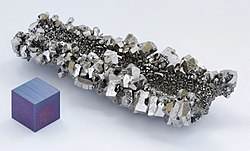

Свойства атома
Название, символ, номер Нио́бий / Niobium (Nb), 41
Атомная масса
(молярная масса) 92,90638(2) а. е. м. (г/моль)
Электронная конфигурация [Kr] 4d4 5s1
Радиус атома 146 пм
Химические свойства
Ковалентный радиус 164 пм
Радиус иона (+5e)69 пм
Электроотрицательность 1,6 (шкала Полинга)
Электродный потенциал 0
Степени окисления 5, 4, 3, 2, 1
Энергия ионизации
(первый электрон) 663,6(6,88) кДж/моль (эВ)
Термодинамические свойства простого вещества
Плотность (при н. у.) 8,57 г/см³
Температура плавления 2741 K (2468 °С, 4474 °F)
Температура кипения 5015 K (4742 °С, 8567 °F)
Уд. теплота плавления 26,8 кДж/моль
Уд. теплота испарения 680 кДж/моль
Молярная теплоёмкость 24,44 Дж/(K·моль)
Молярный объём 10,8 см³/моль
Кристаллическая решётка простого вещества
Структура решётки кубическая
объёмноцентрированая
Параметры решётки 3,301 Å
Температура Дебая 275 K
Прочие характеристики
Теплопроводность (300 K) 53,7 Вт/(м·К)